复现SegRNN¶
约 12975 个字 18 行代码 84 张图片 预计阅读时间 43 分钟
一些链接：
https://github.com/lss-1138/SegRNN/issues?q=is%3Aissue%20state%3Aclosed
项目复述逐字稿，留着讲组会用
Hello 大家好，今天我给大家讲 SegRNN 的论文以及对应的代码，我这次有好好的准备，大家可以好好听，然后我们可以随时讨论哈哈哈；
pre¶
首先，我们从 github 上克隆下来的项目到了本地，首先按照作者的 readme 一步步配置虚拟环境按照 requirements 安装库，运行。以我拿到的这个 SegRNN 项目为例，看到的是 Shell 脚本调用的 python，我看过的很多深度学习的项目都是用的 args 也就是命令行参数来给 python 传相应的参数，而是用的 shell 脚本，可以把 要通过命令行传给 python 的参数，可以直接在脚本中定义好，通过脚本传。
带参数的 python 文件调试¶
那这个时候，怎么调试 python 呢？
我们来看到这个 shell 脚本调用 python 的方法
一般 shell 脚本是存储在 scripts 文件夹下的，以 .sh 结尾的文件。好来看到这个 shell 脚本调用 python 的命名是 python -u run_longExp.py ，-u 表示直接修改python 文件传入参数的意思，这里我想说一下，我所讲的内容，都是我根据自己调试这个项目以及遇到的内容学习到的，所以讲的不对的地方一定要告诉我，我们一起讨论。
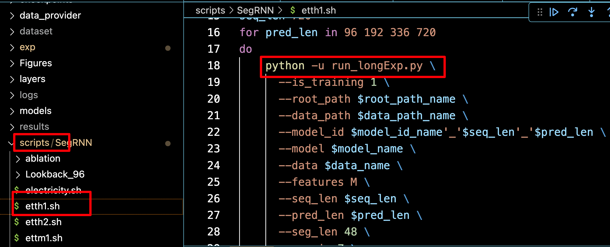
好，回到正题，现在我们就要修改 shell 调用 python 文件的方法，具体来说就是改成：python -m debugpy --listen 5998 --wait-for-client run_longExp.py
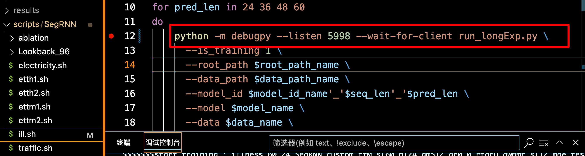
现在我来一个个解释这行命令的意思：
-m debugpy 的意思就是调用 debugpy ，就是调用 python 调试程序，对 python 进行调试，注意 debugpy 是 python 的一个库，所以我们在使用这个的命令的时候，首先就是 pip install debugpy
-listen 5998 的意思的监听 5998 端口，也就是把 python 的调试程序连接到 5998 端口，然后调试，当然你设置成别的也就是可以的，
那我们怎么选择端口呢？
在命令行终端，运行以下代码，查看设备的空闲端口，然后你随便选一个，在 python 调试的launch.json的文件中修改
for port in {5000..6000}; do
(echo > /dev/tcp/localhost/$port) >/dev/null 2>&1 || echo "$port is free"
done
那怎么找到 python 调试文件的 配置文件呢？
在VSCode按Command+Shift+P, 输入Debug: Add Configuration 即可打开 launch.json，当然了你也可以在 vscode 旁边的小虫子，点 新建 launch.json
找到以后，添加以下配置，注意是在 configration 的关键字下修改。
{
"version": "0.2.0",
"configurations": [
{
"name": "[这里更换为任意名称]",
"type": "python",
"request": "attach",
"connect": {
"host": "localhost",
"port": 5998
}
}
]
}
这是我的 launch.json文件的完整样子：
{
// 使用 IntelliSense 了解相关属性。
// 悬停以查看现有属性的描述。
// 欲了解更多信息，请访问: https://go.microsoft.com/fwlink/?linkid=830387
"version": "0.2.0",
"configurations": [
{
"name": "[这里更换为任意名称]",
"type": "python",
"request": "attach",
"connect": {
"host": "localhost",
"port": 5998
}
},
{
"type": "bashdb",
"request": "launch",
"name": "Bash-Debug (type in script name)",
"cwd": "${workspaceFolder}",
"program": "${command:AskForScriptName}",
"args": []
},
{
"type": "bashdb",
"request": "launch",
"name": "Bash-Debug (select script from list of sh files)",
"cwd": "${workspaceFolder}",
"program": "${command:SelectScriptName}",
"args": []
},
{
"type": "bashdb",
"request": "launch",
"name": "Bash-Debug (hardcoded script name)",
"cwd": "${workspaceFolder}",
"program": "${workspaceFolder}/path/to/script.sh",
"args": []
},
{
"type": "bashdb",
"request": "launch",
"name": "Bash-Debug (simplest configuration)",
"program": "${file}"
}
]
}
想说明的是，我这里还配置了，脚本的调试，分别是：
"Bash-Debug (type in script name)" 表示通过输入脚本名称启动调试
"Bash-Debug (select script from list of sh files)", 通过脚本列表选择调试文件，等等，就不说了，因为我也不是特别明白，这里的配置主要是对 shell 脚本的调试，配置了这个，那么 shell 脚本也就可以调试了。
好了，现在关于 --listen 参数讲完了，讲下一个参数 --wait-for-client
这个的意思是说，我们在启动脚本的时候，要等待连接调试程序，才能正常调试，意思就是 运行脚本以后，点一下左边的小虫子，选择 我们配置的 调试器，就是我们设置的 name，就选我们有监听窗口的那个。
这样我们在 调用的python run_longExp.py 上，打断点并运行脚本，就可以调试了。
🟢 还有另一种方法，就是直接把脚本文件丢给 chatgpt说：请你根据这个脚本文件写一个可以用于调试配置，添加到 launch.json
类似：
{
"name": "Python: run_longExp.py",
"type": "python",
"request": "launch",
"program": "${workspaceFolder}/run_longExp.py",
"args": [
"--model_id", "illness_60_24",
"--is_training", "1" ,
"--model", "SegRNN",
"--data", "custom",
"--root_path", "./dataset/",
"--data_path", "national_illness.csv",
"--features", "M",
"--seq_len", "60",
"--pred_len", "24",
"--d_model", "512",
"--dropout", "0.0",
"--rnn_type", "gru",
"--dec_way", "pmf",
"--seg_len", "12",
"--loss", "mae",
"--des", "test",
"--itr", "1",
"--train_epochs", "2",
"--num_workers", "0"
],
"console": "integratedTerminal",
"justMyCode": true,
"cwd": "${workspaceFolder}"
},
这个叫以 启动模式调试文件，刚刚介绍的叫做 attach 附加模式。这种设置的好处是，直接选，直接调，超方便：
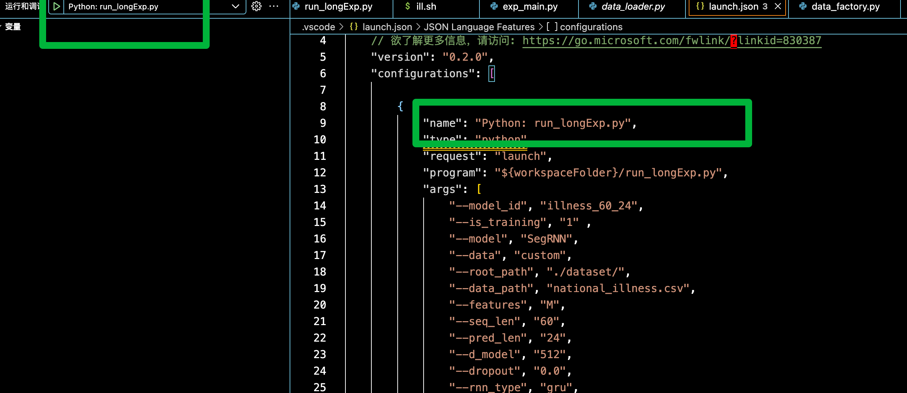
哦，对了，怎么运行脚本文件
在 vscode 的命令行就可以直接运行两种方法，一个是 ./你想运行的脚本文件的路径，还有就是 sh 你想运行的脚本文件的路径，这两种方法，有点区别，但我还没有可以的区分。哦，对了，如果有的时候，可能需要先添加权限，才能正常的运行 shell 脚本，具体就是在运行脚本前执行 chang mode 添加 执行权限，具体的命令就是命令行直接输入： chmod +x 脚本文件名称

以上是第一部分的讲解：shell 调用的python，我们怎么进行调试。
现在我们终于可以调试 我们的项目了。开始。
调试项目文件¶
首先**第一个断点**，打到调用的 python 文件的开始，

我把这个 run_longExp文件，叫做**项目主文件**，主要包括的模型的迭代训练，整个项目的 python 参数设置，而等一下我们 会看到这个 run_longExp.py 会频繁调用 exp_main.py，我把它 叫 模型主文件，主要包含的东西就是，运行一次模型我们需要加载的训练集、验证集和测试集。
然后应该打的断点就是 初始化init 处，和训练 forward 处、或者 train 处、或者调用的 model(x)处。
初始化 init 处，可以让我们知道 文件之间的调用关系，因为越好的项目封装的越好，但是也越抽象，需要不断的捋明白类之间的调用关系，而类又封装到一个个 python 文件中。
forward 的地方，能让我们看到 数据流动以及变化，这是最重要的部分了。
还有一些你不明白的地方或者什么的，想打断点就打断点。好了，这是我想说的打断点的一下经验。
下面继续开始我的断点 ，我的第二个断点在：
这个断点是我想打 init 断点 exp = Exp(args) 和 forward 断点 exp.train(setting) 时，遇到第一个比较不明白的地方，我不明白，因为我第一次看到这么做的。
这里的逻辑是什么呢？
这里其实是类的重命名，也是 Exp_Main 本身就是一个类，但是在项目主文件用这个类的时候，重命名了一下，后面在项目主文件用的时候，用的都是这一个重命名的类，然后用这个重命名的类，进行的实例化。
我现在想说一下，这个Exp_Main，是从哪里来的： from exp.exp_main import Exp_Main，是这句话。也就是 这个类 在 exp 文件夹下 exp_main.py 的 Exp_Main 类。记住这个模型主文件 exp_main.py，因为经常用。
然后没什么想说的了，进入下一个部分，类的 初始化 exp = Exp(args)
哦，对，你看我这儿，我还在 setting 这打了一个记录点，就是我不明白的地方

断点的类型还是挺多的，直接断点、记录点，条件断点，命中次数断点。记录点不停，就是打印信息。我有些断点之前不明白就是普通断点，明白了就变成了记录点，不想停了但是做个标记，然后不明白的地方也标记一下，也弄成记录点。后面再看。
好，继续回到，exp = Exp(args) # set experiments
点，步进。
步进就是一步步执行，会进入到函数内部，逐过程就是逐步执行，不会进入调用的函数，然后还有继续执行，就是一直执行，直到遇到 下一个断点。

因为我已经实现标了一个记录点，然后步进 执行到这句，也触发了记录点。打印了信息。花括号包裹的部分，会自动替换成 python 程序的变量，输出到调试控制台。
想说明的就是，这里能停止，是因为步进到了这里，并不是因为打了记录点。
说完了。然后继续回到 项目的执行。
这里我们可以看到进入了 Exp_Main的 init 部分，我记这个就是打印一下路径，因为最开始看的时候，太乱了，各种调用，头都晕了。
这里就是说，我们从 项目主文件 run long exp.py，进入了 模型主文件 exp_main.py 模型的的init 和 train训练过程 都在这里了。
输出的意思就是说，我们现在到了 exp 文件夹下，exp_main.py的 Exp_Main类 的 init 方法。
这里有想说的地方，是因为python的继承的，你看这个 class Exp_Main 是继承的父类
关于 python 的继承和多态想说明的是：
我现在把类的重命名是理解为 多态（错！），有理解更好的欢迎找我讨论，而类的继承一般就是 类的名称小括号里的东西 class Exp_Main(Exp_Basic):，或者你看类 init 方法下面的第一句 super 什么什么的super(Exp_Main, self).__init__(args)
然后，对于深度学习来说，一般是继承自 nn.Module的，而这里继承的是 Exp_Basic ，也就是也是一个自定义函数，那，话不多说，
步进，看看它到底是什么东西，诶，然后我们就看到了，Exp_Main有的，Exp_Basic都有，方法都是一样的，但是 Exp_Main 更全，相当于 Exp_Basic是一个模版

现在我们步进到了继承的父类文件，开始逐步执行这里，一步步的
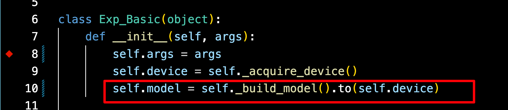
到这里，想说的是，涉及到了 方法的重写，也就是 子类和父类中都有 这个 self._build_model()，但是 很明显父类中什么也没有，但是子类更全，方法重写是，先看子类的，子类没有重写，就执行父类，所以当逐步执行的时候，下一步，我们又返回到了 模型主文件的 ._build_model()，方法。
既然回到了 模型主文件的 build_model 方法，那就看，首先定义了一个字典，通过字符串 所以到对应的类，因为索引到了类，我们才能继续操作呀，比如实例化，forward。
然后就到了 model 的定义
model = model_dict[self.args.model].Model(self.args).float()
通过 self.args.model 参数去字典中 model_dict 中索引到类，然后调用这个类的额 .Model() 方法，float 不说了，就是转换数据类型
这里传入的参数，也就是 self.args.model=SegRNN，是个字符串，通过字典索引到了类，并且是自定义的类，并且，类是先 init 初始化，然后 forward 传入数据，进行数据的流动，所以这句应该是也是到了某个 init 中，那话不多说，步进，如我们所料，就是到了 SegRNN.py Model方法中的 init，

嗯，因为我之前也打了一个记录点，所以调试控制台有输出。现在我们现在的位置，models 文件下，SegRNN.py 的 Model 类中，并且调用的是 init 方法。
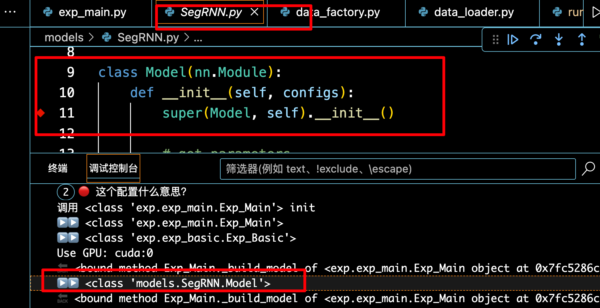
不信你就一个个点点看看：
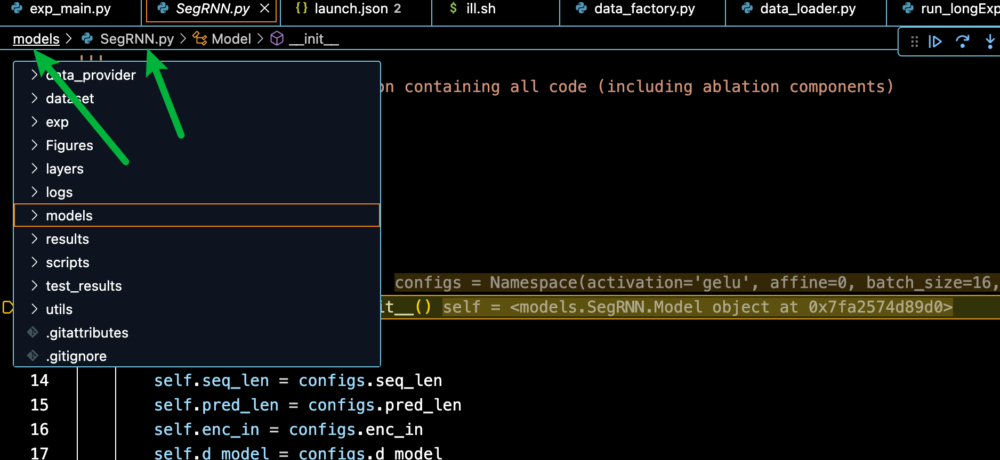
，你按住 command 也可以跳到定义的地方。一样的。
接下来就看这个 SegRNN 的 init 方法，直接点 继续，跳到下一个断点，注意这行：
这行是 可逆实例化层，这里可以提前说一下，对于时间序列来说，有两种归一化，之前说过 BatchNorm 和 LayerNorm，一个按列归一化，一个按行归一化；对于时间序列来说分别进行了 全局归一化，就是整个 样本集维度的归一化，减均值除以方差，相当于不划分 batch 的归一化；实例归一化 相当于 划分出来的 同一个样本内 同一个特征的归一化。对于
标准化方法补充¶
用以下这几张图来直观的看一下：
BatchNorm：

LayerNorm
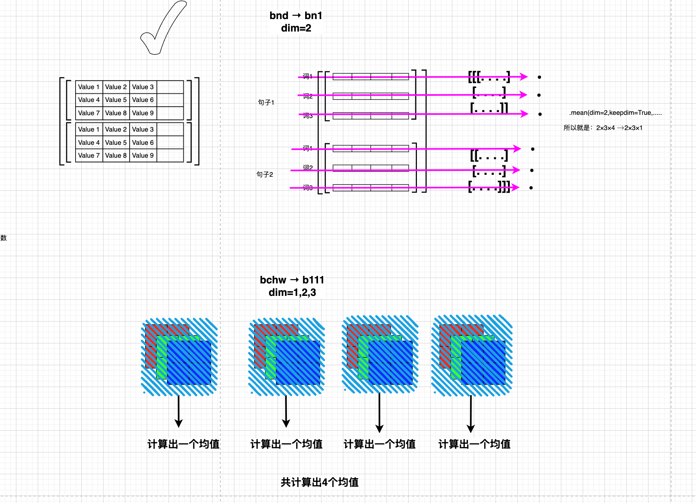
实例归一化
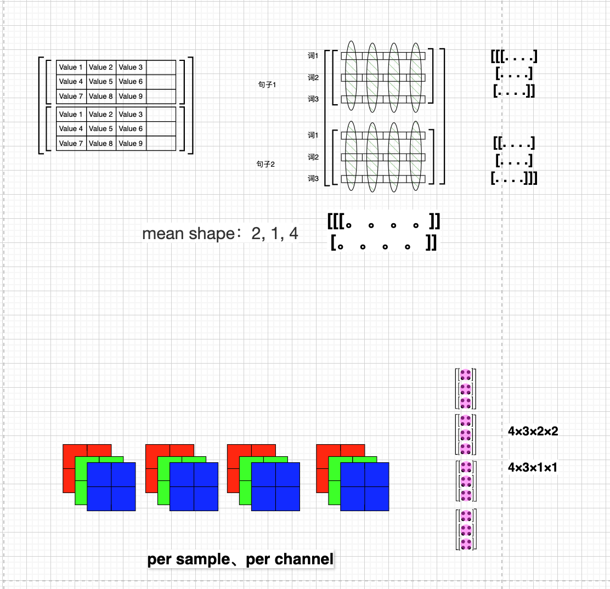
除了，批归一化，层归一化，实例归一化，还想给大家补充一个 分组归一化，可以补充一个小点就是分组卷积。意思就是对图像中的通道分组，分别训练每一个组内的卷积核。传统卷积是一张3 通道图片对应一个好几个 3 通道的卷积核，对于分组来说，可能就是一张 4 通道的特征图，对前 2 个通道用一个卷积核，对后2个通道用一个卷积核，这样学的好处就是更精细的学习特征。组归一化的图：

哦，对，说到这个分组卷积，其实卷积还有膨胀卷积，深度可分离卷积，转置卷积，需要注意的是，所谓的转置卷积是指恢复原始图片的形状，并不是完全恢复原始图片等，好，能拓展的已经拓展完了。提一下深度可分离卷积就是 深度卷积和 逐点卷积。深度卷积就是一张图，有几个通道就用分成几个组，就用几个卷积核。逐点卷积就是 1×1 的卷积核，点对点的卷积。
卷积补充¶
诶，对还想说一点，就是 在做图像的时候，conv 层的定义是（inputchannel，outputchannel，kernelsize，padding，stride）
当我们看到 kernelsize=3，padding=1 的时候，就可以直接说是不变卷积，全称就是不变形状卷积。不变形状卷积还有 1×1 的卷积，也是不改变特征图大小的，只是改变通道数，用于升维和降维，对于图片来说，维度就是通道数。这些都是在 stride=1 的情况下。
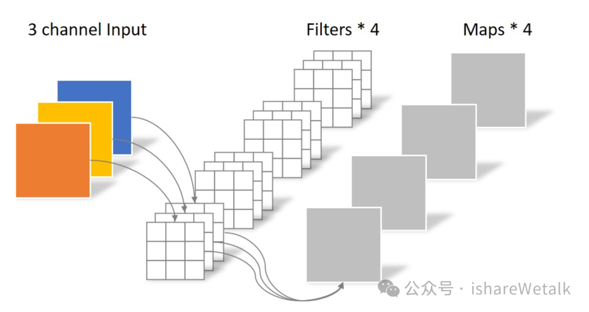
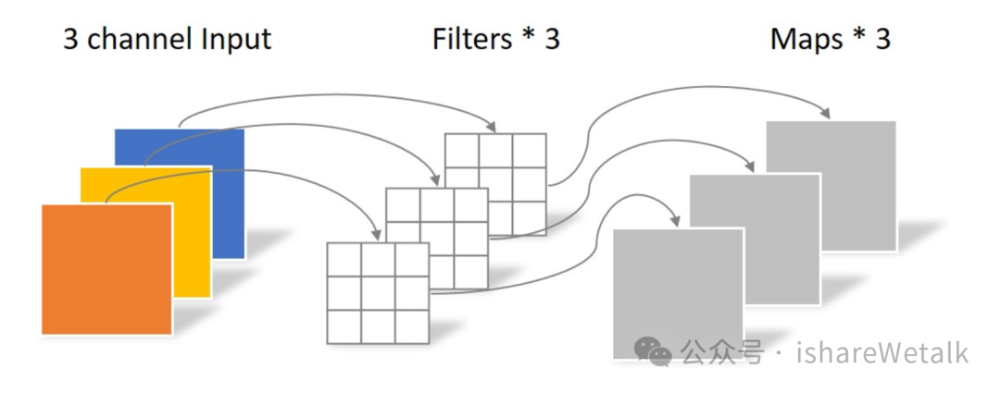
好，回到这个实例归一化。
SegRNN init¶
继续调试我们的项目，逐步
我们在 SegRNN.py初始化好的 model，会返回给 exp_main.py 中的 model，这边我又打了一个记录点，打印了模型结构
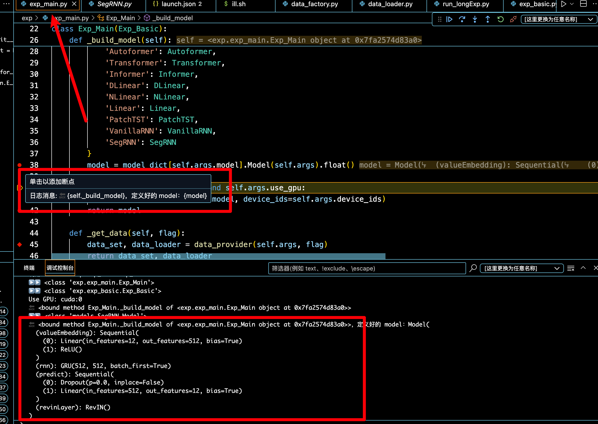
我们定义的 SegRNN 的模型结构：有一个 valueEmbedding 层、RNN 层，本文的 RNN 层用的是 RNN 变体GRU ，还有一个预测层。后面我们在 SegRNN 的 forward 层中再详细的看每一步的执行过程。
好，我们一直逐步执行，然后我们回到了 项目主文件，可以看到初始化的模型，传给了 exp
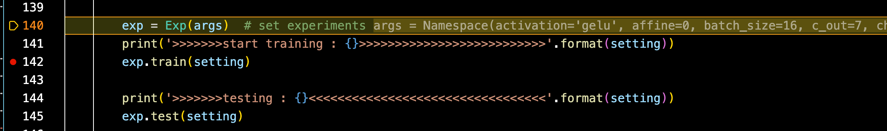
好了，我们点 继续 ，来到模型的 训练阶段
exp.train()¶
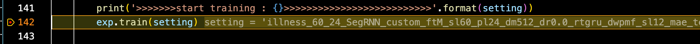
点击 步进， 进入到 模型主文件 train 方法，开始模型的训练，首先加载数据集，训练集、验证集和测试集，我们只调试 train Data set 的加载，因为这些数据集的加载方法是一样的。
首先，训练集调用的自定义方法 self._get_data，

点击 步进 看怎么获取的训练集，又看到 调用的 data_provider ，又是自定义的函数，继续 步进
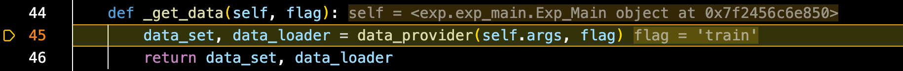
，步进会运行一步停一步，步进到这一步，同时触发 我提前打的记录点，调试控制台输出当前位置，看导航栏 也是一样的

这里没有调用了，我们==逐步执行==
因为我们的 flag 是 train，所以执行 else，逐步执行到 dataset，dataset 的加载 用的是一个 Data 类，鼠标悬停，发现是一个 自定义类 dataprovider 文件夹下，data_loader.py文件下的 Dataset_Custom类

，那==步进==
相当于data_factor.py 接收加载好的数据集
data_loader.py 里面定义的具体类 的是 真正的数据加载主文件，里面是每个数据集具体的数据加载方法
在这个类中，前面都是一些数据加载的初始化，最后一句 self.__read_data__()，开始读数据集，那话不多说，步进
我的记录点记录的方式是，箭头表示调用，跳进了新的文件。调用了新的类。

来看具体的，首先 定义了一个 全局标准化，就是刚刚说的对所有的特征维度进行归一化，消除量纲的影响；
后面就是 pandas 读 csv 数据，cols 拿到所有的类名，然后就是重新排列一下列的顺序，后面按照 7,2,1 的顺序划分训练集、测试集和验证集，
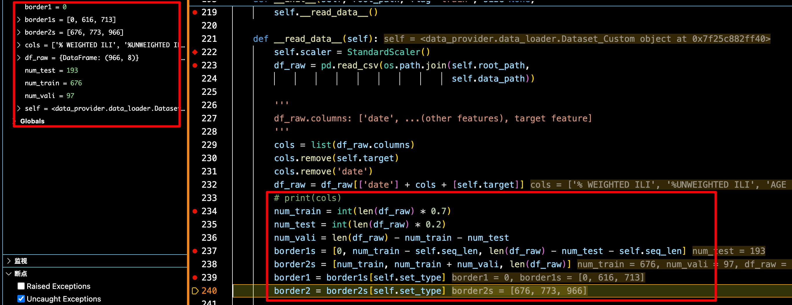
具体来说，我们逐步执行完以后看左边的调试窗口，
调试窗口¶
这里插入一句，调试窗口怎么看。我们重点看这个 Locals 局部变量，就是我们这个 函数内部的变量，局部变量窗口，包含了这个类里面所有定义的 变量。
全局变量窗口，就是这个函数文件中定义的所有类，我们调用的所有官方的库、自定义的库、还有函数，这里的特殊变量就不是重点关注得了，因为封装的更抽象，一个下划线是受保护，两个下划线的隐私的，外部不可访问，总之过于抽象，就不看了吧。

总结来说，重点还是看 局部变量窗口，全局变量窗口，就看看我们定义了什么类，调用了什么函数等。
数据集划分¶

首先，按照 721 划分，理论上训练集时间步：676；验证集时间步：97；测试集时间步：193，用图来表示的话，就是：
也就是说 总共是 966 个数据点，8 个特征，具体处理的时候，时间戳特征单独处理，7 个特征一起处理。
而且，我们看这个 python 文件，在取训练集的时候，用的是 int（）取整方法取得 数据集长度的 0.7，测试集也是，为了不丢样本，验证集用的是减法，所以还是很严谨的
border1s & border2s¶
这里先说明 border1s & border2s 的含义。后面再仔细的讲解 border1s & border2s 的具体实现方法。
首先 就是 我们的 border1s、border2s是分别定义了训练集、验证集、测试集的左边界和右边界；
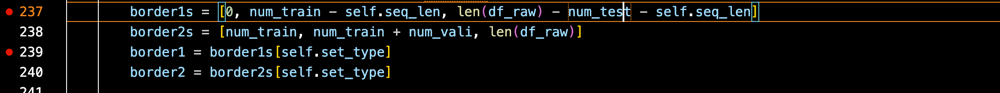
border1 和 border2是根据 传进来的 self.set_type，来拿到对应的训练集、验证集或者测试集的 左右边界索引。我们这里的 self.set_type=0，这个又是怎么来的呢？
鼠标 command，跳转 ，可以看到是通过一个字典映射拿到的，根据我们传入的 flag=train，拿到了 左右边界索引 ，分别保存训练集的左边界索引和右边界索引。
我们已经知道 训练集时间步：676；验证集时间步：97；测试集时间步：193；本来应该是：
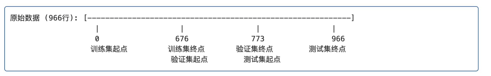
这里想提前说明的是： python 索引的是一个左闭右开的区间，就是说 索引 0 到 676，能够索引到第 0 行，但是最后一个的索引是 第675 行，就能索引到 676 个时间步，所以后面讲的时候也不做过多区分。
下面 我们特地强调一下这里的数据集划分
也就是说： 本来训练集时间步是前0-676 个时间点，验证集是紧随其后的 97 个时间步，对应的索引应该是 676+97=773,测试集是是验证集 的结束索引时间步 773到后面紧随其后的 193 个时间步，也就是 773+193=966 ，刚好是数据集长度
但是， 实际上是， borders1 和 borders2的 定义在源码中是：
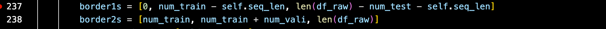
也就是
用图来表示就是：
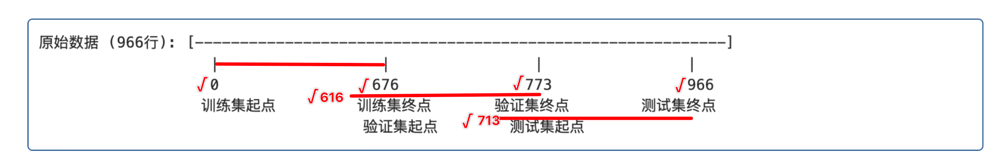
训练集时间步是前0-676 个时间点，验证集是 616 到 773 个时间点，测试集是713 到 966 个时间步
为什么是这样的呢？
这样做的意义是，为了保证每个样本都有 60 个时间步的输入序列和 24 个时间步的预测目标，具体来说，对于验证集的第一个时间步，如果让它构成一个完成的样本，就需要向前回退 60 个时间步，同样对于测试集的第一个时间步来说，让它构成一个样本，也需要回退 60 个时间步。
也就是说，实际上，
训练集时间步有 676 个，验证集时间步有 $773-616=157 $个，或者就是 \(97+60=157\) 个时间步；测试集 有 \(253\) 个时间步。
当我们知道了数据集时间步的划分以后，现在我们讨论，这些时间步能构成多少个样本？，这个问题当代码执行到哪一步再说。
self.features¶
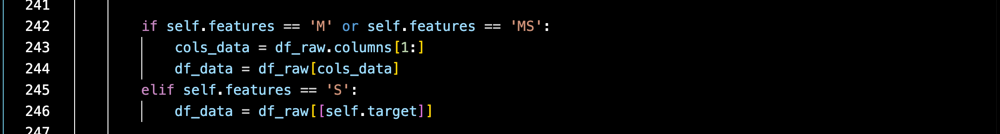
这里是说 时间序列的3 种任务，
多变量预测多变量，多变量预测单变量，单变量预测单变量
具体来说，这里想额外说明的一点是，时间序列预测，我们日期特征的提取是通过 偏移来处理的，这个我们后面会说，对应到代码中可以看到 在使用多变量的时候，都是不拿第 0 列特征的，因为日期我们等会处理。
M(多变量/Multiple variables)：- 当 self.features == 'M' 时，代码选择除第一列（通常是日期列）外的所有列作为特征
- cols_data = df_raw.columns[1:]获取除第一列外的所有列名
- df_data = df_raw[cols_data] 选择这些列作为模型输入数据
MS(多变量到单变量预测/Multiple to Single)：- 与
M模式相同的数据选择方式- 使用所有特征列作为输入，但主要目的是预测目标变量
S(单变量/Single variable)：- 当 self.features == 'S' 时，只选择目标列作为特征
- df_data = df_raw[[self.target]]仅选择由 self.target指定的列
举个实际的例子，来说明这三种预测：
假设我们有一个电力消耗数据集，包含如下列：
[date,HUFL, HULL, MUFL, MULL, LUFL, LULL, OT]
date 表示时间戳 放到第一列，目标列OT 放到最后一列，这是我们列重排的结果
如果我们设置：
- self.features = 'M'：
- 所有列（除了 date都会被选中：
OT, HUFL, HULL, MUFL, MULL, LUFL, LULL- 模型将使用所有这些特征进行训练和预测
self.features = 'MS'：- 同样选择所有列（除了
date）：OT, HUFL, HULL, MUFL, MULL, LUFL, LULL- 通常用于利用多个特征来预测目标变量
self.features = 'S'且self.target = 'OT'：- 只选择
OT列- 模型将只使用油温历史数据来预测未来油温值，不考虑其他变量
好了，下面看
self.scale¶
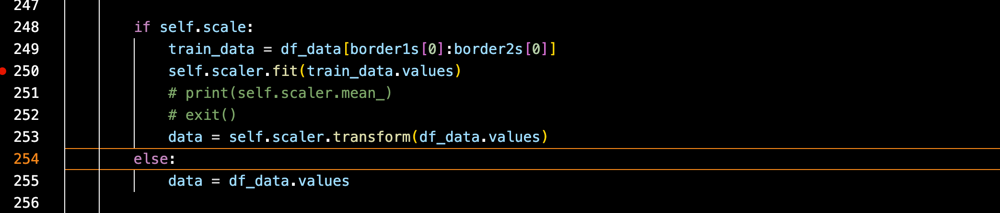
还记得我们刚开始定义的 self.scaler = StandardScaler() 全局数据标准化器嘛
现在开始拟合，注意这里拟合的时候，只用的是训练数据进行拟合，因为在真实情况中 验证集和测试集是观测不到的，所以这里的执行逻辑就是，先拿出 训练集数据，然后用训练集数据拟合 标准化器，然后用拟合好的标准化器来标准化全局数据。忽然觉得叫归一化不太合适，因为 是 减均值 除以 标准差的 标准化，并不是归一化。
df_stamp¶
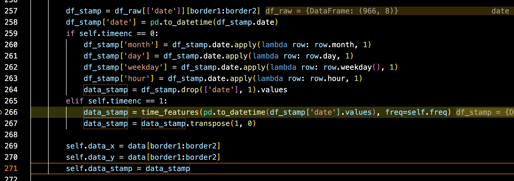
终于用到了我们的 border1，border2，就是处理我们现在想处理的数据集了，首先将我们先处理的 数据集时间戳拿出来，传给 df_stamp ，之前我们已经说过了，就是时间序列数据，日期有自己的特征构造方法，使用的的 offset 偏移 的概念
先看一下 我们这个原始的时间戳数据长啥样：
在调试窗口，局部变量窗口，悬停，即可查看。这里因为时间都是 00:00:00 所以省略了
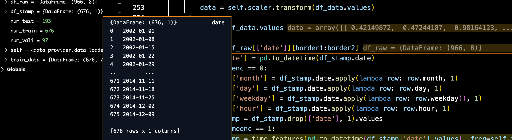
这是我们正在调试使用的疾病数据集：

标准的时间戳数据：年月日、时分秒
好了，我们主要来看怎么处理的这个时间，因为这里传进来 self.timeenc=1，所以执行 elif，并且又是 调用的 自定义函数 time_features
当你不知道这个函数是自定义的 还是 官方的，那就 按住 command+鼠标，跳进去看看，或者看看 调试窗口的 全局变量窗口的函数变量
稍微注意一下就是，我们传入进去的参数是 时间戳数据，以及 周期频率，h 表示小时。但其实对于这个疾病数据集来说，时间戳周期是 周，有点小问题，但影响不大。
话不多说，步进，

看到又是一个调用，继续==步进==，而且是==同文件的 调用==。
我们先看一下这里，<built-in function to_offset> 表示的是指向 Pandas 库中 to_offset函数的引用。（也就是 内置函数）

好，继续回到源代码
步进到 time_features_from_frequency_str 函数内部，首先有一个 特征偏移字典

来到下面这行：

根据给定的时间频率字符串选择合适的时间特征
to_offset是 Pandas 中的函数，用于将频率字符串（如 'H'、'D'、'W' 等）转换为对应的偏移对象- 比如我们这里，'H' 转换为 Hour 偏移对象，
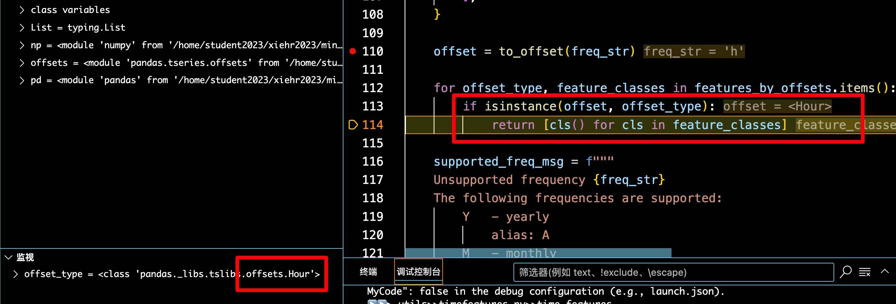
- 这段 for 循环的作用就是根据 输入的 freq_str 也就是频率字符串，去偏移特征字典中 索引到特征类列表，最终返回类的实例
- **具体来说，**就是首先
offset = to_offset(freq_str)根据传入的'H'字符串得到<Hour>对象 - 然后遍历遍历字典的 键 和 值，如果 offset 也就是我们得到的
<Hour>对象是遍历得到的offset_type，也就是 字典的键，的实例，那么对应的字典的 值 ，feature_classes就通过一个列表推导式，对得到的类会加一个括号cls(),表示返回类的实例。 - **再仔细重复一遍，**就是
to_offset('H')返回的是一个<Hour>对象 - for循环遍历字典时，会发现这个对象是
offsets.Hour的实例 - 从字典中查找对应 offsets.Hour的特征类列表：
[HourOfDay, DayOfWeek, DayOfMonth, DayOfYear] - 返回这些类的实例列表：
[HourOfDay(), DayOfWeek(), DayOfMonth(), DayOfYear()]
接下来，继续看 np.vstack 这一行，
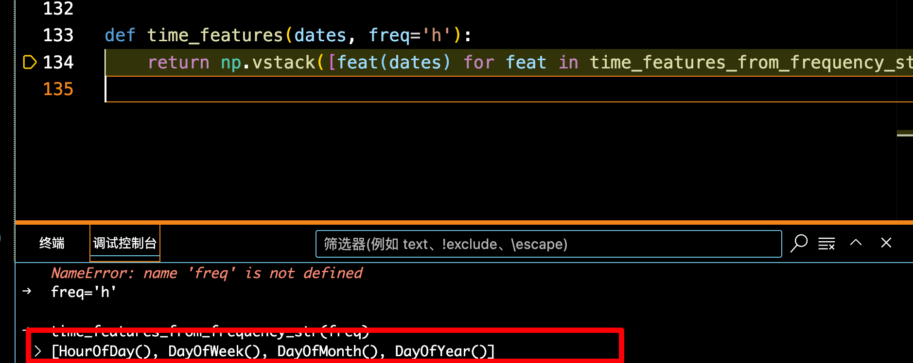
首先，time_features_from_frequency_str(freq) 返回的是 [HourOfDay(), DayOfWeek(), DayOfMonth(), DayOfYear()]
然后，根据得到的 [HourOfDay(), DayOfWeek(), DayOfMonth(), DayOfYear()] 对传入的 dates 进行处理，首先我们传入的 dates，是标准的日期，pandas 会自动解析出 年、月、日、小时，因为全是 0 点，所以省略了。

根具体来说的处理是：

点击步进 ，可以看到 index.day，自动摘出所有的日期，这里的的处理是 -1 /30 是为了归一化，因为我们的日期记号为 1 号到 31 号，对日期减1，变成 0~30，÷30，变成 0~1，－0.5 表示 中心化，最终的数据范围是 -0.5~0.5

- HourOfDay()：表示 一天中的第几个小时
- DayOfWeek()：表示一周中的星期几
- DayOfMonth()：表示一个月中的第几天
- DayOfYear()：表示一年中的第几天
处理逻辑都是差不多的，都中心化为 -0.5~0.5
返回的形状是 [特征数, 日期数] 也就是 4 × 676
这里 np.vstack 堆叠的是 列表，所以是 4 行 676 列，对应的后面是，有一个 transpose 操作，data_stamp = data_stamp.transpose(1, 0) ，变成 676 ×4 的格式
最终得到的数据和形状：

self.data_x¶
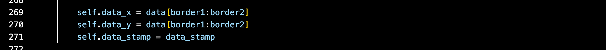
接下来就完成了 dataset 类的实现，得到了 训练集、验证集 或者测试集，这里两个变量的意思是，x 序列用来索引 输入序列，y 序列用来索引 预测序列，具体的用处在 __getitem__ 方法中。同时 self. 定义的变量在类内相当于全局变量。
既然说到了 这个 __getitem__ 方法，那就说明一下 这个魔法方法是怎么调用和实现的。
（强调 1）时间序列样本构造的实现¶
上节课有跳过的部分，在进行 SegRNN 的 forward 过程之前，仔细讲讲==时间序列中时间步与样本构造的关系。==
这一部分主要涉及的源码是 data_factor.py 文件中 data_provider 函数中 重写的 Dataset 类和 dataloader。
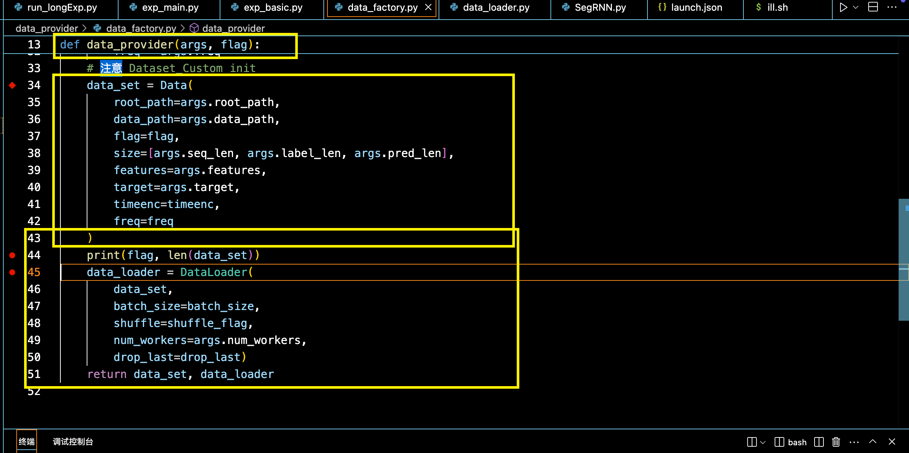
还有就是 dataloader.py中的 Dataset_Custom类 class Dataset_Custom(Dataset): ，这里的 init 方法、getitem 方法还有 len 方法都是需要着重注意的。
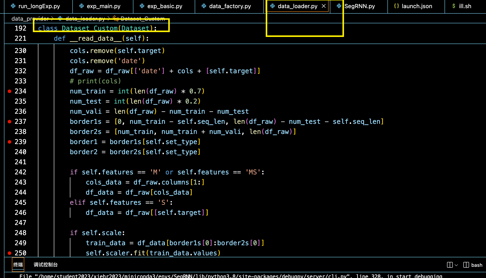
直观地理解¶
那就说一下这个时间序列的样本是怎么划分的，以及为什么要这样做。
对于一张二维数表，时间序列都是二维数表，行是每个时间点，列是每个时间点采集的数据，比如疾病感染人数，记录的 2002 年 1 月开始，到 2020 年 1 月结束，每周一采集数据，除了记录疾病感染人数，还可以记录一些与感染疾病人数的相关的比如当地天气什么的；
具体来说就是：

Y 目标列，时间序列数据与其他图像或者 NLP 任务不同的是，特征，在未来时间点，我们是不知道所有的特征的，完全都是未知的。
时间序列样本的构造：用于训练的时间步，记作 sequence_length，用于预测的时间步 pred_length，还有一个比较特殊的概念 label_length ，表示用于训练的时间步有多少用于指导预测，用一张图表示：
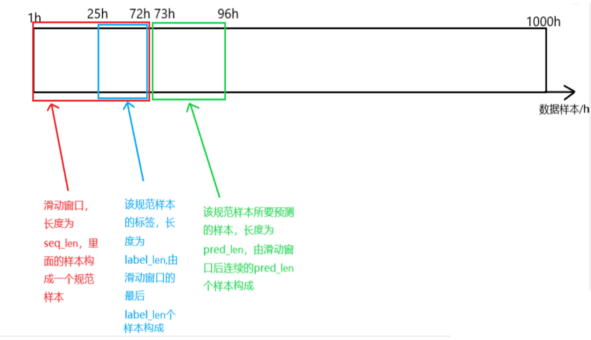
有几个 batch 我们就移动几个小时，构造几个 batch。

当然了，这里也有一个遗留问题，就是这样构造 batch的话，不就是按照特征的顺序喂给模型了吗，模型不就会依赖这个顺序了嘛，而一般我们在构建 Dataloader 的时候，会设置一个参数 shuffle=True ，也就是 会随机选取 batch 个索引 index，从这个索引开始选择 sequence length 个时间步以及后面的 predict length 进行封装，封装成一个样本。
在这个项目的 illness 数据集中，有 966 个时间点，每个时间点记录了 7 个特征，batch size=16，sequence length=60，feature=7，更具体来说时间序列的数据封装就是：
16 个独立的样本，每个样本有 60 个连续的时间步及对应的标签值，每个时间步有 7 个特征
所以就是因为样本是随机从训练集中采的，所以就假设随机采index的是 7、38、0、129等等等，一共 16 个（这就是 batchsize，表示一个 batch中容纳的样本数）
每个样本中连续的 60 个时间步，这个就很好理解了：
(0)随机生成第 1 个 index=7，得到样本：从第 7 个时间开始.....跟着 60 个，后面紧跟着要预测的 24 个时间步，dataloader 读数据时都封装好了，会对应上的
(1)随机生成第 2个 index=38，得到样本：从第 38 个时间开始.....
(2)随机生成第 3个 index=0：从第 0个时间开始
......
(15)随机生成第 16个 index=129：从第 129 个时间开始
接下来来看具体的代码实现
大前提：
我们有一个 966×8（1+7）的时间序列数据集，1 表示时间戳特征，7 表示记录的特征。
样本的构成¶
这里样本的构成，就看 dataset 类中 重写的 len 方法。

这个 len 方法就是给出了样本数
我们来看这个样本数是怎么计算的，
首先 这个 self.data_x 是怎么来的： self.data_x = data[border1:border2]，通过 borders1 和 borders2 索引来的，具体来说，对于训练集有 676 个时间步，验证集 157 个时间步，测试集 253 个时间步，也就是分别对应着 训练集、验证集、测试集的 len(self.data_x) ，所以，len(训练集)、len(验证集)、len(测试集) 的也就是样本数 分别是 676-60-24+1=593 、157-60-24+1=74、253-60-24+1=170 个样本。
再解释一下
就是 对于第一个样本的索引，应该从第一个时间步向后留出 60 个时间步，最后一个样本的索引应该从最后一个时间步向前留出 24 个预测时间步构成最后一个样本。中间留下的就是有效索引。也是样本数，但是我们索引一般都是从 0 开始，中间留下的有效索引不是从 0 开始的。所以，为了从 0 开始，那么就把第一个时间步作为第一个样本的索引， 那么后面最后一个样本的索引就应该 从 676 个时间步-60 个输入序列时间步-24 个预测时间步+1=593索引，也就是最后一个时间步的索引。
就是下面这张图展示的。
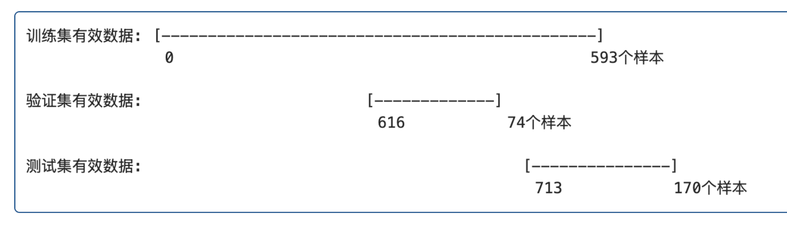
Dataset_Custom.__init__¶
再具体的，我们来看这个 Dataset_Custom 类
- 首先就是，数据主文件中，以下代码是调用了
Dataset_Custom类的 init 方法，其中这个 init 方法又调用了类中魔法方法的__read_data__
data_set = Data(
root_path=args.root_path,
data_path=args.data_path,
flag=flag,
size=[args.seq_len, args.label_len, args.pred_len],
features=args.features,
target=args.target,
timeenc=timeenc,
freq=freq
)
- 想要说明的一点是，这个 自定义的dataset 类 是 继承了 pytorch 官方定义的 Dataset 类，并重写了 init 方法、getitem 方法和 len 方法。getitem 魔法方法可以使得实例化以后的对象使用索引调用，而 len 方法，在使用
len(实例化的对象)时 调用。
这里 __read_data__的讲解，前面讲了一半：也就是这一部分

Dataset_Custom.__len__¶
然后，我们继续看数据主文件的下一行
调用了 自定义 Dataset 类的 len 方法，也就是重写的 pytorch Dataset 类的 len 方法，这个 len 方法就是给出了样本数
我们来看这个样本数是怎么计算的，首先 这个 self.data_x 是怎么来的： self.data_x = data[border1:border2]，通过 borders1 和 borders2 索引来的，具体来说，对于训练集有 676 个时间步，验证集 157 个时间步，测试集 253 个时间步，也就是分别对应着 训练集、验证集、测试集的 len(self.data_x) ，所以，len(训练集)、len(验证集)、len(测试集) 的也就是样本数 分别是 676-60-24+1=593 、157-60-24+1=74、253-60-24+1=170 个样本。
在解释一下，就是 对于第一个样本的索引，应该从第一个时间步向后留出 60 个时间步，最后一个样本的索引应该从最后一个时间步向前留出 24 个预测时间步构成最后一个样本。中间留下的就是有效索引。也是样本数，但是我们索引一般都是从 0 开始，中间留下的有效索引不是从 0 开始的。所以，为了从 0 开始，那么就把第一个时间步作为第一个样本的索引，那么后面最后一个样本的索引就应该...
或者说，如果把第一个时间步作为第一个样本的索引，那么，最后一个样本的索引就应该 从 676 个时间步-60 个输入序列时间步-24 个预测时间步+1=593索引，也就是最后一个时间步的索引。 就是下面这张图展示的。
接下来继续看 数据主文件中的 dataloader 方法：
data_loader = DataLoader(
data_set,
batch_size=batch_size,
shuffle=shuffle_flag,
num_workers=args.num_workers,
drop_last=drop_last)
getitem¶
这里的 Dataloader 用的是 pytorch 自带的Dataloader 类。
我们知道 实例化的类加==中括号[索引 index]== 会自动调用 getitem 方法，就是类似这样：obj = MyClass([1, 2, 3])，print(obj[1]) ，其中 MyClass([1, 2, 3]) 会自动调用 init 方法，而 实例化的类 obj[1] 就会调用 getitem 方法。
这里想说明的是，Dataloader 也会自动调用 Dataset 的 getitem 方法，那调用 getitem 方法就得有索引，索引怎么来的？ 是通过 shuffle 生成的，如果 shuffle=True，就会自动生成 batchsize 个随机索引，并将这些索引 传递给 getitem，然后得到随机样本，封装成 dataloader，随机索引的范围是通过 Dataset 类的 len 方法限制的。如果 shuffle=false 的话，就按顺序选batchsize 个样本。
接下来，我们仔细看这个 __getitem__ 方法，只需要一个参数 index 即可。
def __getitem__(self, index):
s_begin = index
s_end = s_begin + self.seq_len
r_begin = s_end - self.label_len
r_end = r_begin + self.label_len + self.pred_len
seq_x = self.data_x[s_begin:s_end]
seq_y = self.data_y[r_begin:r_end]
seq_x_mark = self.data_stamp[s_begin:s_end]
seq_y_mark = self.data_stamp[r_begin:r_end]
return seq_x, seq_y, seq_x_mark, seq_y_mark
现在我们就假设随机抽取训练集的样本，训练集的样本数是 593 个，dataloader 在生成随机索引时会限制在 len(dataset)中，我们设置的 batchsize 为 16，也我们假设生成的 16 个随机索引分别是 [0,23, 105, 67, 198, 54,..., 593]（总计16个索引），如果 shuffle=False 的话，就是按顺序取前 16 个索引也就是 0~15。得到的每个索引，根据每个索引得到样本，向后的 60 个时间步作为输入序列，因为 label_sequence=0，所以紧接着的 24 个时间步是预测序列；假设我们生成的随机索引为： 23，也就是 index=23 就会调用 dataset 的 getitem 方法。
s_begin 输入序列起始点；s_end 输入序列结束点；r_begin标签序列起点；r_end 标签+预测序列终点；
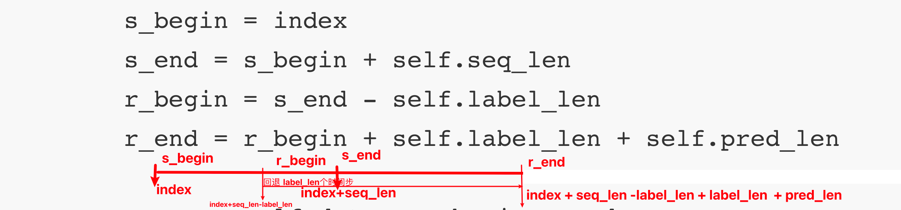
输入序列起点 =index
输入序列终点 =index+seq_len
预测序列起点 =index+seq_len-label_len
预测序列终点 =index+seq_len+pred_len 这里省略了 -label_len+label_len
然后
seq_x = self.data_x[s_begin:s_end]
seq_y = self.data_y[r_begin:r_end]
seq_x_mark = self.data_stamp[s_begin:s_end]
seq_y_mark = self.data_stamp[r_begin:r_end]
return seq_x, seq_y, seq_x_mark, seq_y_mark
根据输入序列索引和预测序列索引，来得到 输入特征序列和预测特征序列、输入时间戳特征序列和预测时间戳特征序列
疾病数据集：966×8（7 个特征+1 个时间戳，所以一共 8 列）
对于单个样本的 seq_x = self.seq_len × 7，seq_y = (label_len + pred_len) × 7，seq_x_mark = self.seq_len × 4 , seq_y_mark = self.seq_len × 4
dataloader 封装了 batchsize 个 seq_x, seq_y, seq_x_mark, seq_y_mark

滑动窗口和样本堆叠¶
时间序列数据的滑动窗口是在 __getitem__ 方法中通过索引切片实现的：
-
窗口起点：每个索引 index 代表一个滑动窗口的起始位置
-
窗口划分：
- 输入窗口：
[index:index+seq_len](60个时间步) - 预测窗口：
[index+seq_len-label_len:index+pred_len](24（label_len+pred_len）个时间步) - 样本重叠：
- 由于索引在
0到(len(data_x)-seq_len-pred_len)之间，相邻索引的窗口会有大量重叠 - 例如，索引0和索引1的输入窗口共享59个时间步
- 由于索引在
用图来理解就是这样的

总结：DataLoader 通过调用 Dataset 的 __getitem__ 方法获取单个样本，然后将它们堆叠成批次。样本的实际结构和滑动窗口逻辑由 Dataset 实现，DataLoader 只负责组装和批处理。
data_set = Data(
root_path=args.root_path, # './dataset/'
data_path=args.data_path, # 'national_illness.csv'
flag=flag, # flag = 'train'
size=[args.seq_len, args.label_len, args.pred_len], # 60,0,24 args.label_len？ =0；解释：args.label_len 的解释：这个参数通常在编码器-解码器架构中使用，表示解码器输入中已知的标签长度。在这个例子中它是0，表示解码器没有已知标签作为输入（只依赖编码器的输出进行预测）
features=args.features, # 'M'
target=args.target, # 'OT'
timeenc=timeenc, # timeenc = 1
freq=freq # freq="h"
) # 打断点，跳到 Dataset_Custom init 、、为什么这里能读到数据。答：data_set》Data》data_dict》Dataset_Custom》from data_provider.data_loader import Dataset_ETT_hour, Dataset_ETT_minute, Dataset_Custom, Dataset_Pred--》Dataset_Custom init
print(flag, len(data_set))
data_loader = DataLoader(
data_set,
batch_size=batch_size, # 16
shuffle=shuffle_flag, # True
num_workers=args.num_workers, # 10
drop_last=drop_last) # True
return data_set, data_loader
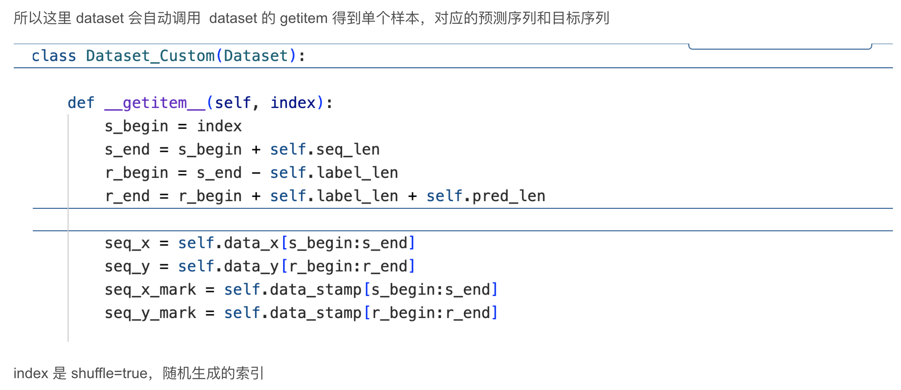
len(data_set)¶
这里有一个问题需要注意一下，就是我们在打印训练集的时候，明明时间长度是 676，为什么 len(data_set)=593
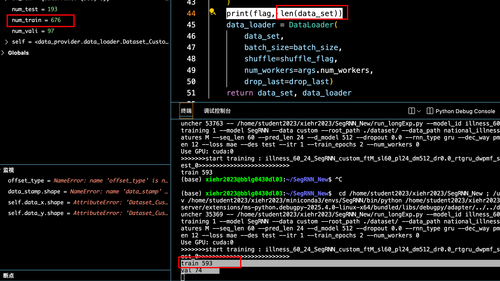
是因为，Dataset_Custom类，重写了 len 方法，这里的 len 计算方法是 676-60-24+1=593 为什么这样计算？

解释：这是因为 我们训练集有 676 个时间步，不代表有 676 个训练样本，一个训练样本要有 60 个时间步对应的预测时间步是紧随其后的 24 个时间步，也就是用 60 个历史时间步来预测未来的 24 个时间步，这样构成一个样本，所以 676 个时间步，最后一个样本的索引应该预留出 60+24 个时间步。也就是 676 个时间步 构成 593 个训练样本。同样的，按照这个逻辑，验证集有 97-60-24+1=14， ，测试集：193-60-24+1=110？
这里产生问题了，是因为，
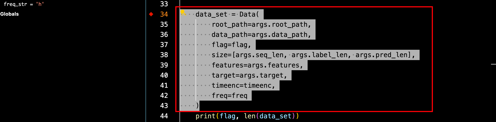
这里还没有执行完，应该 Data（）会自动调用 ，这个 Dataset_Custom 类的 __getitem__ 方法
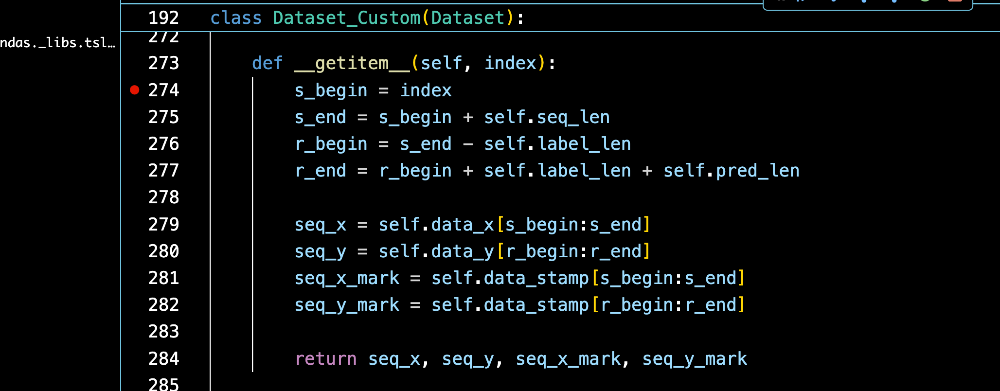
模型训练迭代¶
时间步和样本：
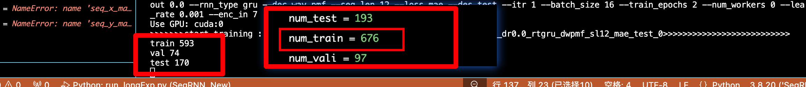
模型迭代训练：
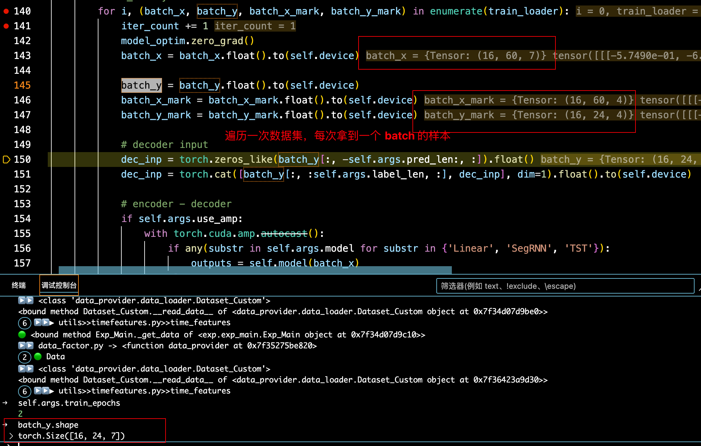
SegRNN forward¶
编码器¶
我们就看SegRNN 的编码器部分，也就是主要是这部分：
def forward(self, x):
# b:batch_size c:channel_size s:seq_len s:seq_len
# d:d_model w:seg_len n:seg_num_x m:seg_num_y
batch_size = x.size(0)
# normalization and permute b,s,c -> b,c,s
if self.revin:
x = self.revinLayer(x, 'norm').permute(0, 2, 1)
else:
seq_last = x[:, -1:, :].detach()
x = (x - seq_last).permute(0, 2, 1) # b,c,s
# segment and embedding b,c,s -> bc,n,w -> bc,n,d
x = self.valueEmbedding(x.reshape(-1, self.seg_num_x, self.seg_len))
# encoding
if self.rnn_type == "lstm":
_, (hn, cn) = self.rnn(x)
else:
_, hn = self.rnn(x) # bc,n,d 1,bc,d
先说一下这里的思想，然后对应到代码也会很好理解：
这里的流程图：

首先，16 batchsize，60sequendce_length，7 个特征的通俗解释
-
16 个独立的样本，每个样本有 60 个连续的时间步及对应的标签值，每个时间步有 7个特征
-
所以就是因为样本是随机从训练集中采的，所以就假设采的是
-
样本 1，样本 6，样本 109，样本 334，样本 354等等等，一共 16 个（这就是 batchsize，表示一个 batch中容纳的样本数）
接下来，每个样本中连续的 60 个时间步，这个就很好理解了，但是这 60 个连续的时间步：
-
16 个独立的样本，每个样本有 60 个连续的时间步及对应的标签值，每个时间步有 7 个特征
-
所以就是因为样本是随机从训练集中采的，所以就假设随机采index的是 7、38、0、129等等等，一共 16 个（这就是 batchsize，表示一个 batch中容纳的样本数）
-
每个样本中连续的 60 个时间步，这个就很好理解了：
-
(0)随机生成第 1 个 index=7，得到样本：从第 7 个时间开始.....跟着 60 个，后面紧跟着要预测的 24 个时间步，dataloader 读数据时都封装好了，会对应上的
-
(1)随机生成第 2个 index=38，得到样本：从第 38 个时间开始.....
-
(2)随机生成第 3个 index=0：从第 0个时间开始
-
......
-
(15)随机生成第 16个 index=129：从第 129 个时间开始
在进行转置之前进行了可逆实例标准化，也就是对训练样本内的特征进行实例标准化，目的是为了消除分布偏移，用一个例子来解释，就是：

好处是：消除绝对水平和尺度的影响，让模型专注于学习序列的==相对变化模式==
对于两次标准化更直观的例子：
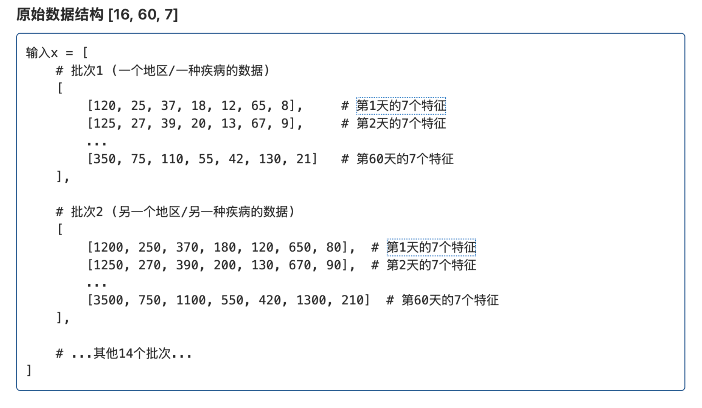
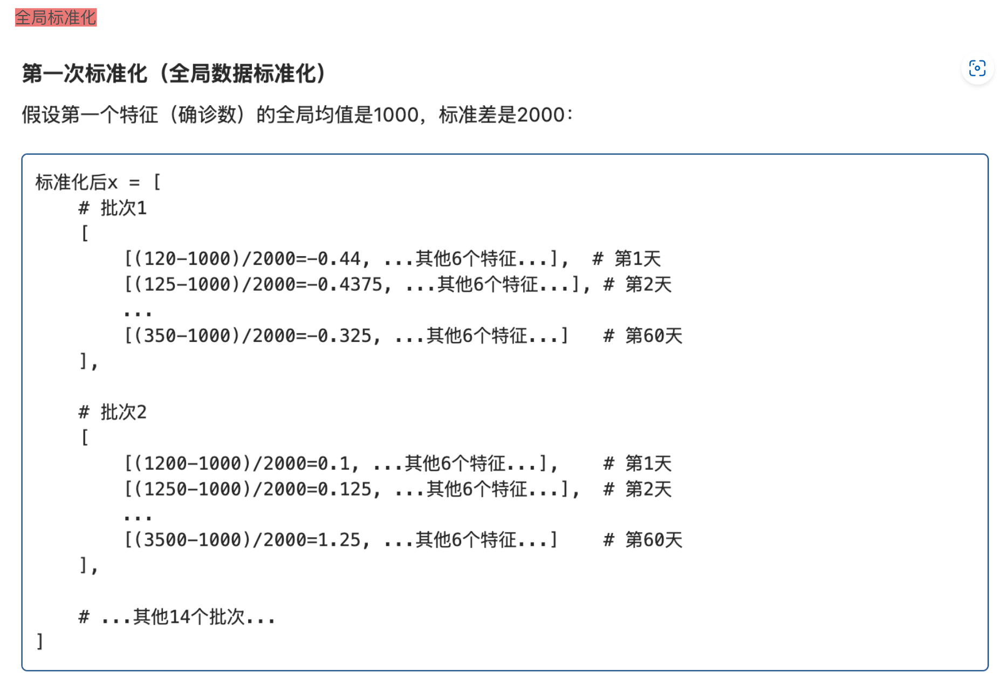

交换维度¶
在进行完标准化以后，进行 permute，交换第1 维度和 2 维度，对应就是：
接下来 16x60x7 --》 16×7×60
就是：
（0）样本 1：特征 1[60个连续的时间步]，特征 2，特征 3,,,,,特征 7
（1）样本 6：特征 1，特征 2，特征 3,,,,,特征 7
（2）样本109：特征 1，特征 2，特征 3,,,,,特征 7
......
（15）样本 334：特征 1，特征 2，特征 3,,,,,特征 7
每个特征分别有 60 个连续的时间步
接下来呢，又开始对于这 60 个时间步，分段，分成 5 段，每段 12 个
然后呢，就把分出来的 段，12 维 统统喂到 linear 中，嵌入到 512 维，用的一个嵌入空间，所以嵌入时使用权值矩阵是一样的，毕竟得在同一个准则下才有可比性，这一步就是学习了每一个小段内，时间之间的相关关系
对应的源代码就是：
这个代码的写法其实不太好理解，
-1 就是 16×7=112，它把样本batch 维度和特征维度，混到一起写，reshape 成（-1，seg_num_x,seg_dim）
（0）样本 1-特征 1 ：【12】【12】【12】【12】【12】
（0）样本 1-特征 2 ：【12】【12】【12】【12】【12】
....
（0）样本 1-特征 7 ：【12】【12】【12】【12】【12】
（1）样本 6-特征 1 ：【12】【12】【12】【12】【12】
（1）样本 6-特征 2 ：【12】【12】【12】【12】【12】
....
（1）样本 6-特征 7 ：【12】【12】【12】【12】【12】
（15）样本 334-特征 1 ：【12】【12】【12】【12】【12】
（15）样本 334-特征 2 ：【12】【12】【12】【12】【12】
....
（15）样本 334-特征 7 ：【12】【12】【12】【12】【12】
也就是 112 条序列、、、 112×5×12
linear 就是把所有的 12 全部嵌入到 512 维
112×5×512
（0）样本 1-特征 1 ：【512】【512】【512】【512】【512】→ 5步GRU → hn[0,0]
（0）样本 1-特征 2 ：【512】【512】【512】【512】【512】→ 5步GRU → hn[0,1]
....
（0）样本 1-特征 7 ：【512】【512】【512】【512】【512】→ 5步GRU → hn[0,6]
（1）样本 6-特征 1 ：【512】【512】【512】【512】【512】→ 5步GRU → hn[0,7]
（1）样本 6-特征 2 ：【512】【512】【512】【512】【512】→ 5步GRU → hn[0,8]
....
（1）样本 6-特征 7 ：【512】【512】【512】【512】【512】
（15）样本 334-特征 1 ：【512】【512】【512】【512】【512】
（15）样本 334-特征 2 ：【512】【512】【512】【512】【512】
....
（15）样本 334-特征 7 ：【512】【512】【512】【512】【512】→ 5步GRU → hn[0,111]
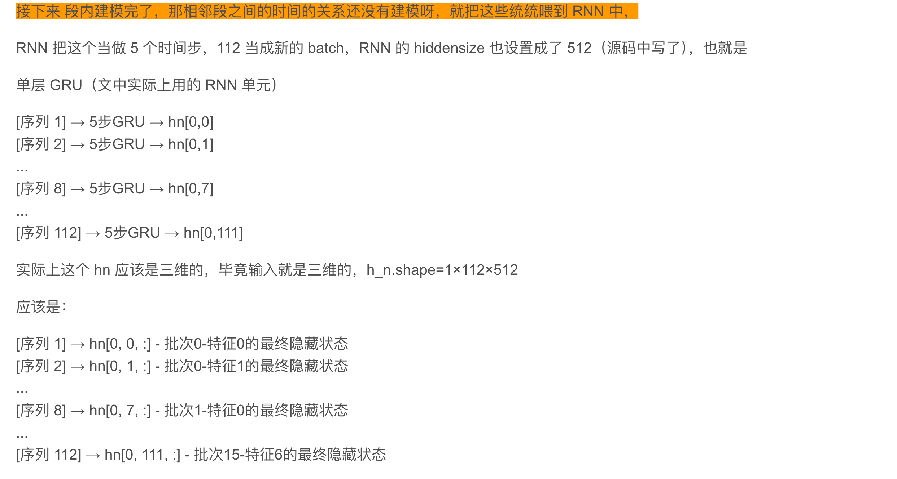
补充一下：

传统 GRU¶


整个 forward 过程的图解：
输入: x [16, 60, 7]
(16个批次，每个60个时间步，每步7个特征)
│
▼
┌──────────────────────────────┐
│ RevIN 标准化 + 维度置换 │
│ x = revinLayer(x, 'norm') │
│ .permute(0, 2, 1) │
└──────────────┬───────────────┘
│
▼
x [16, 7, 60]
(16个批次，7个特征，每个特征60个时间步)
│
▼
┌──────────────────────────────┐
│ 重塑为分段格式 │
│ x.reshape(-1, seg_num_x, seg_len) │
└──────────────┬───────────────┘
│
▼
x [112, 5, 12]
(112个序列=16批次×7特征，每个分5段，每段12步)
│
▼
┌──────────────────────────────┐
│ 段值嵌入 │
│ x = valueEmbedding(x) │
│ (Linear: 12 → 512 + ReLU) │
└──────────────┬───────────────┘
│
▼
x [112, 5, 512]
(112个序列，5个段，每段表示为512维向量)
│
▼
┌──────────────────────────────┐
│ GRU 编码 │
│ _, hn = self.rnn(x) │
└──────────────┬───────────────┘
│
▼
hn [1, 112, 512]
(1层GRU，112个序列的最终隐藏状态)
│
▼
┌────────────────┬─────────────┐
│ RMF 解码 │ PMF 解码 │
└────────┬───────┴──────┬──────┘
│ │
┌────────▼───────┐ ┌───▼──────────┐
│ 循环多步预测 │ │ 并行多步预测 │
│(逐段自回归预测) │ │(一次性预测所有段)│
└────────┬───────┘ └───┬──────────┘
│ │
│ ┌──────▼─────────┐
│ │ 位置和通道嵌入 │
│ │ 组合成条件 │
│ └──────┬─────────┘
│ │
│ ┌──────▼─────────┐
│ │ pos_emb [224, 1, 512] │
│ │ (224=16×7×2) │
│ └──────┬─────────┘
│ │
│ ┌──────▼─────────┐
│ │ 条件GRU解码 │
│ │ _, hy = rnn(pos_emb, hn) │
│ └──────┬─────────┘
│ │
│ ┌──────▼─────────┐
│ │ hy [1, 224, 512] │
│ └──────┬─────────┘
│ │
┌────────▼───────┐ ┌────▼──────────┐
│ 预测 + 堆叠各段 │ │ 预测 │
└────────┬───────┘ │ y = predict(hy) │
│ └────┬───────────┘
│ │
└──────┬───────┘
│
▼
y [16, 7, 24]
(预测结果: 16个批次，7个特征，预测24个时间步)
│
▼
┌───────────────────────────────┐
│ 维度置换 + RevIN反标准化 │
│ y = revinLayer(y.permute(0, 2, 1), 'denorm') │
└───────────────┬───────────────┘
│
▼
最终输出 y [16, 24, 7]
(16个批次，预测未来24个时间步，每步7个特征)
解码过程¶
关于 SegRNN 的两个核心创新点
（1）分段编码
（2）并行解码
接下来我们来看并行解码过程，因为是一次解码，所以需要位置编码，来看这个位置编码的定义，有段的编码和通道特征编码，经过拼接构成了完整的位置编码。
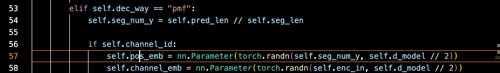
具体来说，self.pos_emb.shape = 2 × 256；
其中，self.seg_num_y = self.pred_len // self.seg_len = 24 //12，24 是预测步长，12 是分段步长，也就是 预测的 y 分成 2 段，每段 12 个步长，用 256 维的向量表示 1 个位置，2 个位置，就是 2 个 256 维的向量，得到每个段的位置编码；
由于每个段是用 7 个特征表示的，所以还需要表示特征位置编码，self.channel_emb.shape = 7×256 也就是 第0 特征位置是一个256 维的向量表示，第 1 特征是一个 256 维的向量表示，以此类推得到 通道位置编码，接下来继续看位置编码怎么加到序列上的。

看注释，预测的2 段位置编码，是 2×256 的，第 0 维扩一维，变成 1×2×256 的，在第一维重复 7 次（也就是特征数），最后变成 7×2×256 维度的；
通道位置编码是 7×256 的，第 1 维扩 1 维，变成 7×1×256 的，第 1 维重复 预测时间步分段次数，变成 7×2×256 的
然后，在最后一维 也就是dim=-1进行拼接（torch.cat），变成 7×2×512 的形状
然后 view 维度转换（这个维度转换是保持内存不变的意思，和 permute、transpose 都是维度变换函数，有点区别，我也不太明白，总之就是维度变换），view 成（-1,1,512 的，也就是合并 预测时间步分段位置编码 和 通道位置编码 变成 形状为 14×1×512 的。
最后就是 repeat，第 0 维重复 batchsize 次，最终的 pos_emb 也就是 16×14=224 ，也就是 224×1×512
- self.pos_emb.unsqueeze(0).repeat(self.enc_in, 1, 1)：将位置编码扩展为 (enc_in, seg_num_y, d_model // 2) 的形状。
- self.channel_emb.unsqueeze(1).repeat(1, self.seg_num_y, 1)：将通道编码扩展为 (enc_in, seg_num_y, d_model // 2) 的形状。
- -torch.cat([...], dim=-1)：将位置编码和通道编码在最后一个维度上拼接，得到形状为 (enc_in, seg_num_y, d_model) 的编码。
- .view(-1, 1, self.d_model).repeat(batch_size, 1, 1)：将编码展平并扩展为 (batch_size * enc_in * seg_num_y, 1, d_model) 的形状。
位置编码的作用是为每个预测段（segment）添加唯一的位置信息，使模型能够区分不同位置的元素。这对于捕捉序列中的时间依赖性和顺序信息非常重要。
接下来 进行论文的这一部分：

也就是源码中的这一句：
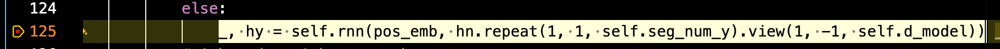
- 然后，将位置编码 pos_emb 输入到 RNN 中，并使用之前的隐藏状态 hn 进行==初始化；==
位置编码 pos_emb：
pos_emb是一个形状为(batch_size * self.enc_in * self.seg_num_y, 1, self.d_model)的张量，包含了位置编码信息。【224,1,512】
隐藏状态 hn 的处理：
-
hn是编码阶段生成的隐藏状态，形状为(1, batch_size * self.enc_in, self.d_model)。 【1,112,512】 -
hn.repeat(1, 1, self.seg_num_y)：将 hn 在最后一个维度上重复self.seg_num_y次，得到形状为(1, batch_size * self.enc_in, self.d_model * self.seg_num_y)的张量。【1,112,1024】 .view(1, -1, self.d_model)：将张量重新调整形状为(1, batch_size * self.enc_in * self.seg_num_y, self.d_model)。【1,224,512】
RNN 的调用：
- self.rnn(pos_emb, hn)：将位置编码 pos_emb 和隐藏状态 hn 输入到 RNN 中。
- _, hy：RNN 的输出，其中 _ 是输出序列，hy 是最后的隐藏状态。
这一步的实际意义是什么？
（1）本来只用 h_n 作为解码的初始状态，现在加入了位置信息，可以进行并行解码，
（2）hy 通过 RNN（循环神经网络）处理位置编码（pos_emb）后得到的隐藏状态
（3）hy 的实际意义在于，它包含了通过 RNN 处理后的序列信息，并且可以用于进一步的预测或解码操作
预测 self.predict¶
首先 self.predict，其实就是一个线性映射层，将 512 维映射到 12 维。这个 12 维是什么？是解码阶段，60 个时间步分成 5 段每段的时间步 步长 12 步，这里的 12 维对应的就是 预测时间步步长 24 步，分成 2 段，每段 12 步。
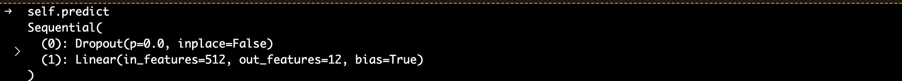
也就是前面 RNN 的调用：
-
self.rnn(pos_emb, hn)：将位置编码 pos_emb 和隐藏状态 hn 输入到 RNN 中。 -
_, hy：RNN 的输出，其中 _ 是输出序列，hy 是最后的隐藏状态。 - 使用
hy进行预测： y = self.predict(hy).view(-1, self.enc_in, self.pred_len)：使用隐藏状态 hy 进行预测，并将预测结果调整为形状为(batch_size, self.enc_in, self.pred_len)的张量。（16×7×24）
最后，反实例标准化，因为之前进行了实例标准化，现在把还原回去。形状变成 16×24×7.
对应源码：
def _denormalize(self, x):
if self.affine:
x = x - self.affine_bias
x = x / (self.affine_weight + self.eps*self.eps)
x = x * self.stdev
if self.subtract_last:
x = x + self.last
else:
x = x + self.mean
return x
最重要的两步：x = x * self.stdev 和 x = x + self.mean
以上就是 SegRNN 的源码实现的理解。